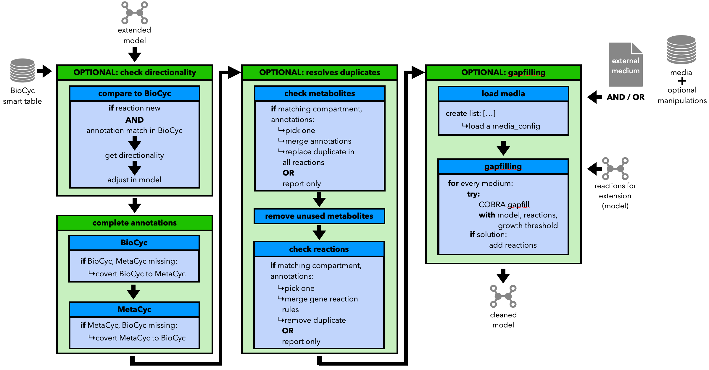

3.2. Step 3, Part 2: Cleaning the Model
The third part of the refinement aims to clean the model regarding its entities, including
checking the directionality of reactions using BioCyc
complete BioCyc/MetaCyc, if only is present
find and resolve duplicate metabolites and reactions
delete unused metabolites
perform gapfilling
Except for the complete Bio/MetaCyc annotations all steps are optional.
Warning
The gapfilling is currently only available in it COBRApy variant.
This part of the pipeline is still a working process, stay tuned for future updates.